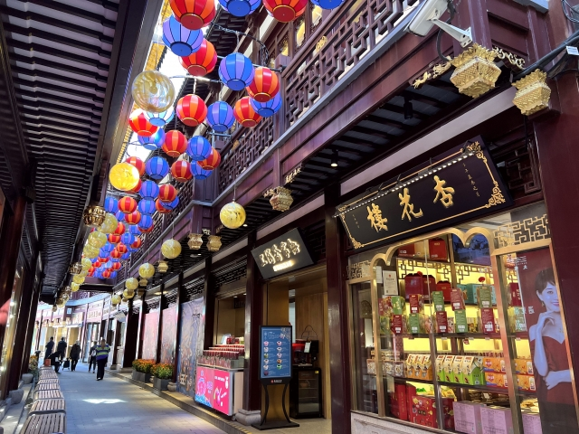
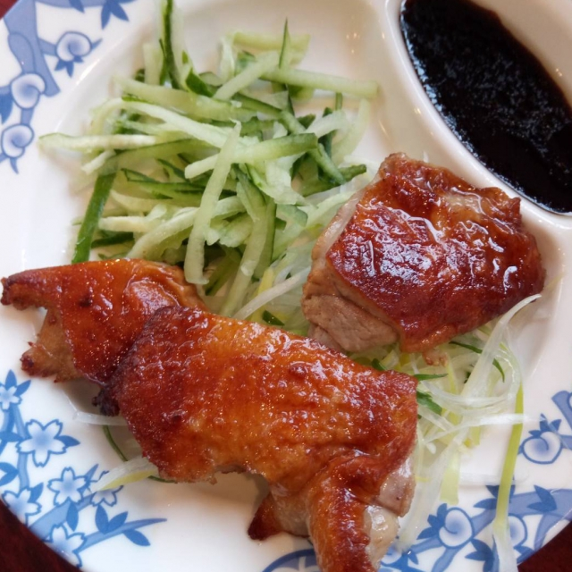
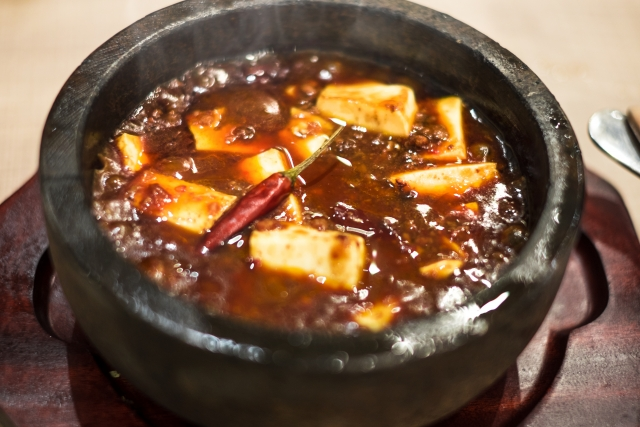

China
China is a country which is located east of asia. The capital of China is Beijing.
China has the largest population in the world and consists of diverse ethnic groups.
Shanghai
Opium War in 1840, it was a trigger that the streets in a European style were born in Shanghai. After the conclusion of the Treaty of Nanking, the first concession (land given administrative and extraterritoriality within the region) was created in Shanghai. After that, avoiding the war, many Chinese flowed into Shanghai and the urban population increased. In this way, cars and rickshaws came and went, creating a cityscape where modern music and dance could be enjoyed.


Now, Shanghai is one of the biggest cities in China.
Food
Chinese food is one of the Three Grand Cuisines. In China, which has a large land area, there are cooking methods and seasoned dishes that are uniquely formed according to the differences in climate, geography, history, ingredients, and eating habits of each region. It has become widespread worldwide, including Japan, and is being localized.


Representative Chinese food are Beijing duck, Xiaolongbao, Beancurd Sichuan Style, Hot pot.
Tourist spots
Every year, many people from around the world visit China for sightseeing. Many traditional buildings remain in China, which has a long history.
The Great Wall, Oriental Pearl Radio & TV Tower and Yu Garden are most famous tourist spots in China.